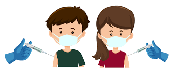

Beneficios de la vacunación en los niños, adolecentes y adultos

Si no nos vacunamos, corremos el riesgo de contraer enfermedades graves como el sarampión,
la meningitis, la neumonía, el tétanos y la poliomielitis, muchas de las cuales pueden ser
discapacitantes y mortales. Según los cálculos de la OMS, las vacunas infantiles salvan
la vida de 4 millones de niños cada año.
Aunque algunas enfermedades son actualmente poco frecuentes, los patógenos que las causan continúan
circulando en todo el mundo o en partes de él. Hoy en día, las enfermedades infecciosas atraviesan
fronteras con facilidad e infectan a las personas que no están protegidas.
Las dos principales razones para vacunarse son protegernos a nosotros mismos y proteger a las personas
que nos rodean. Puesto que no se puede vacunar a todas las personas, por ejemplo, no es recomendable
para los recién nacidos, las personas gravemente enfermas y las que pueden presentar determinadas
alergias, al protegernos nosotros evitamos contagiarles enfermedades que se pueden prevenir mediante
vacunación.